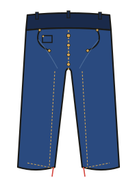

— Chapter 03-1 · Items
ジーンズの、形のはなし。
ストレート、スキニー、テーパード、ブーツカット。 どれがどれだか分からなくなりがちな名前を、 「腿」「裾」「股上」の3つの要素だけで整理します。 ——迷ったら、この章に戻ってきてください。

シルエットを決める3要素
ジーンズの形を分類するのに、実は3つのパラメータで足ります。
| 股上（Rise） | ウエストから股下までの深さ。深い＝ハイライズ / 浅い＝ローライズ |
|---|---|
| 腿回り（Thigh） | 太ももまわりのゆとり。太い＝ワイド / 細い＝スリム |
| 裾幅（Leg Opening） | 裾のひろがり。広い＝フレア / 細い＝テーパード |
この3つの組み合わせで、現行の全シルエットが説明できます。
定番シルエット6種
| レギュラーストレート | 腿・裾ともにほぼ同じ太さ。Levi's 501 が代表。万能 |
|---|---|
| ルーズストレート | 腿も裾も太め。Levi's 550 / Lee 101B。90'sの復権 |
| スリムストレート | 腿やや細め、裾も細め。Levi's 511 / Nudie Slim。現代的 |
| テーパード | 腿ゆったり→裾すぼまり。Levi's 512 / A.P.C. Petit New Standard |
| スキニー | 全体が細い。Levi's 510 / Nudie Skinny Lin。ファッション寄り |
| ブーツカット／フレア | 裾だけ広がる。70'sリバイバル。ワイドは全長にわたって太い |
📏
大人が一本目に選ぶなら、レギュラーストレートかテーパード。
スキニーとフレアは、他のアイテムとの相性が強く出るので、二本目以降に。
501を基準に考える
Levi's 501は1873年のオリジナル・ジーンズの直系で、 「万能ストレート」の基準点です。 他のジーンズはほとんど、501を基準にして 「これよりスリム」「これよりルーズ」という相対位置で語られます。
| Levi's 501 | 基準。レギュラーストレート / ボタンフライ |
|---|---|
| Levi's 505 | 501のジッパーフライ版。少しストレート |
| Levi's 511 | スリムストレート。501より細い |
| Levi's 512 | スリムテーパード |
| Levi's 550 | リラックスドフィット。501より太い |

JEAN SAYS
「501XX」の「XX」は、エクストラ・クオリティの意味。
戦前の赤耳ロットに付けられていた記号で、
今のヴィンテージ復刻モデル（LVC 1947や1955）にも付いてる。
——コレクターが涙を流すやつ。
サイズの選び方
デニムのサイズはウエスト（W）とレングス（L）をインチで表記します。 30W × 32L＝ウエスト約76cm、股下約81cm。
リジッドの場合、ウエストは縮むことを前提に、 ピッタリか少しキツめを選びます（洗うと約3〜5%縮む）。 レングスは裾上げ前提で、くるぶしの下くらいを目安に。
| ジャストサイズ | ベルトなしで穿ける。洗い込むと少し緩む |
|---|---|
| 1サイズ下 | 最初はキツいが、2週間で馴染む。セルヴィッジ推奨 |
| 1サイズ上 | ベルト前提。楽だが、ヒップが落ちやすい |
用語の整理
| ボタンフライ | 前立てがボタン留め。501系。馴染むと開けにくい |
|---|---|
| ジッパーフライ | ファスナー留め。505以降の標準 |
| リベット | ポケット角の金属留め。1873年の発明 |
| アーキュエイト・ステッチ | 後ろポケットのV字/W字の縫い目。Levi's の特徴 |
| 赤タブ | 右後ろポケットの赤いタグ。Levi's が1936年に商標登録 |
| シンチバック | 後ろ中央のベルト調整金具。戦前のヴィンテージ仕様 |

JEAN SAYS
迷ったら、まずLevi's 501のワンウォッシュを買えばいい。
それから自分の体型に合わせて、
「もっと細い」か「もっと太い」か、次の一本を選ぶ。
——基準がないと、ずっと迷子のままだから。